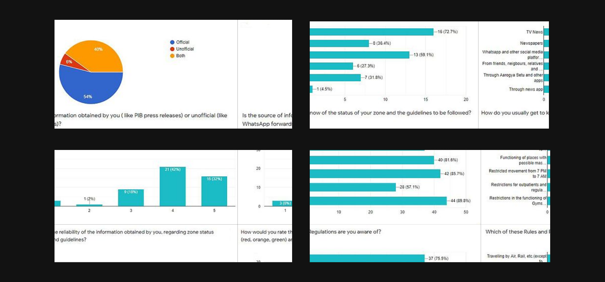

Role: UX/UI Designer
About:
Co.No is a COVID-19 Notifier App. I and My team designed this app while we participated in the UMO Global Design Challenge. As a team we designed an app that can deliver government-verified COVID-19 updates to all citizens.
Project Objective
Create an app-based and a non-app based solution which offers government-verified COVID updates to all citizens. This would be with the help of real-time, location-based update notifications, both offline and online, to everyone who registers for Co.No. As it is a direct link between the government and citizens, it would eliminate any middlemen in the communication of updates such as bulletins and COVID zone updates and hence provide a hassle-free experience without the risk of the spread of fake news.
Project Deliverables:
Product Strategy: Brainstorming, Exploration
User Research: survey’s, interviews, affinity mapping
Sketches, Wireframes, Wire-flows and Storyboard
User Flow and Information Architecture
Low Fidelity Paper Prototype
High Fidelity Prototype
Usability Testing
Design Process
My team and I divided our process into 4 stages.
1. The first stage involved problem identification.
2. It was followed by user research in which we carried out surveys and interviews in order to gain insights about the level of people’s awareness about the current scenario.
3. Next, we brainstormed, identified solutions, and worked on user flow.
4. Lastly, we worked on the designs, starting with low fidelity sketches and ending with a high-fidelity prototype.
The entire process was iterative and we had multiple iterations until we made the final prototype.

Survey
We conducted a 12-question short survey regarding the present state of awareness about lockdown restrictions in their respective locations. Survey-takers were asked about the zone they resided in and accordingly asked about certain zone-specific questions to gain insights about their awareness.
This was followed by certain questions about the sources from where they get COVID-related information and their level of trust in those sources. The form got 98 responses and the collected data formed the basis of our further research and design process.
Results:
1. 46% of the respondents depended on unofficial information, either completely or partially.
2. A majority of respondents (more than 70%) got to know of their zone status through mass media sources like TV, Newspapers, etc.
3. While 59% of respondents reportedly used Whatsapp and social media for updates, only a mere (32%) used official apps like Aarogya Setu.
4. 68% of the respondents didn't consider the information obtained by them as completely reliable and were not confident of the same.
5. About a quarter of the respondents didn't know of most lockdown rules imposed in their area.
User Personas
Personas always help teams to empathize better with the target users and think accordingly. After a team discussion, we finalized 3 Target User Personas, though our service would actually be helping all the citizens.
Pain-point identification
With the survey results and target users personas, we now had the requisite data to identify the major pain points. Each member of the team individually suggested the pain points that he felt needed to be addressed through the service.
This was done using virtual post-it notes on Figma in real-time. Once we had a set of pain points, we worked together to prioritize and group them on a separate board.

Solution Statement
All citizens will get verified Government Guidelines and real-time location-based updates on COVID-19 at their fingertips, meaning a hassle-free experience.
Brainstorming for solutions
Now that the pain-points to be addressed were finalized, a team brainstorming session was held to think of solutions. All the pain points were introspected one by one and then solutions were suggested individually by each of the team members. This was followed by affinity mapping of the suggested solutions and another round of prioritizing solutions based on their usefulness, viability, and uniqueness.
A team voting method was followed for each group of solutions as it wasn’t possible to include all the suggested solutions in one service. And since there were 5 groups, we zeroed in on 5-6 principal solutions that we needed to address in our service.